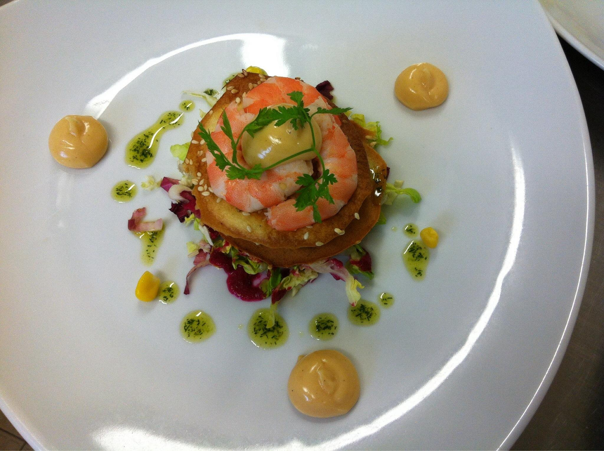

Nous proposons une cuisine traditionnelle et gourmande. La carte ou les menus servis midi et soir raviront vos papilles.
Nous pouvons accueillir tout vos repas de famille, anniversaire et d’entreprise avec une capacité maximale de 80 personnes.
Le midi en semaine, le chef vous propose une formule du midi à 17€ du lundi au vendredi et 20€ le samedi.
Non servi le dimanche et jour férié.